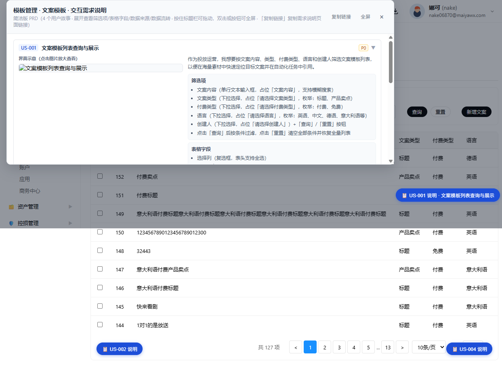
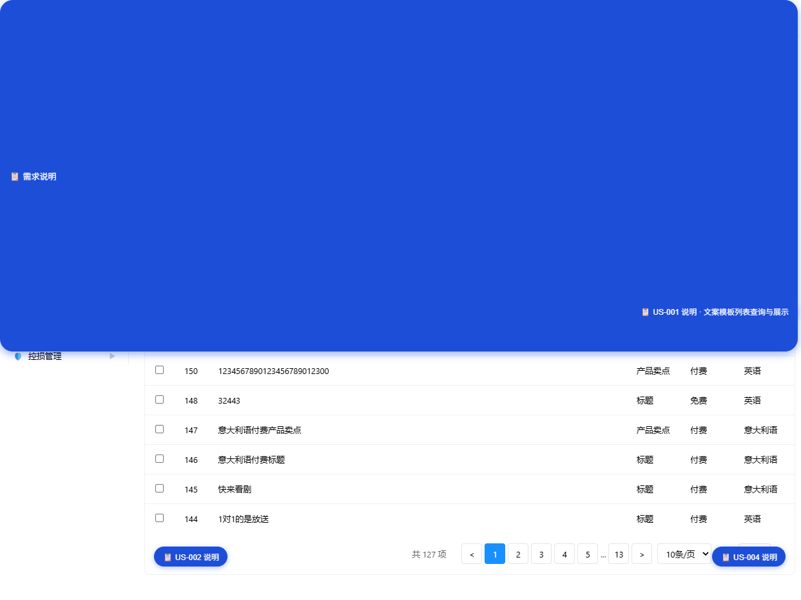

海外投放系统 · 模板管理 / 文案模板 · 交互需求说明
US-001 · 文案模板列表查询与展示
P0
描述
作为投放运营，我想要按文案内容、类型、付费类型、语言和创建人筛选文案模板列表，以便在海量素材中快速定位目标文案并在自动化任务中引用。
界面示意
筛选项
- 文案内容（单行文本输入框，占位「文案内容」，支持模糊搜索）
- 文案类型（下拉选择，占位「请选择文案类型」，枚举：标题、产品卖点）
- 付费类型（下拉选择，占位「请选择付费类型」，枚举：付费、免费）
- 语言（下拉选择，占位「请选择语言」，枚举：英语、中文、德语、意大利语等）
- 创建人（下拉选择，占位「请选择创建人」）
- 操作按钮：「查询」「重置」「新增文案」
点击「查询」后按条件过滤，点击「重置」清空全部条件并恢复全量列表。
表格字段
- 选择列（复选框，表头支持全选）
- ID（数字）
- 文案内容（文本，展示原始文案，过长时折行或截断显示）
- 文案类型（文本：标题、产品卖点）
- 付费类型（文本：付费、免费）
- 语言（文本）
- 创建人（文本）
- 创建时间（文本，格式 yyyy-MM-dd HH:mm）
- 更新时间（文本，格式 yyyy-MM-dd HH:mm）
- 操作（按钮组：编辑、删除）
数据来源
模板管理 - 文案模板列表数据 ← 后端接口返回；筛选项枚举值（语言、文案类型、付费类型）可来自全局字典配置。
数据流转
页面加载 → 默认进入「文案模板」Tab → 调用「获取文案模板列表」接口 → 渲染主表；用户在筛选栏输入/选择条件后点击「查询」执行过滤；点击「重置」恢复全量；点击「新增文案」打开新增弹框。
验收标准（AC）
- 页面加载后默认展示文案模板 Tab 列表
- 支持按文案内容模糊查询，以及按文案类型、付费类型、语言、创建人精确筛选
- 列表支持表头全选/半选，选中行后顶部显示批量操作条
- 表格下方提供分页条（总数、页码、每页条数、跳页）
- 文案内容过长时应保证列宽自适应或提供 tooltip，避免破坏表格布局
US-002 · 批量删除文案模板
P1
描述
作为投放运营，我想要一次性删除多条不再使用的文案模板，以便批量清理过期素材。
界面示意

筛选项
通过列表选择列勾选目标文案，顶部批量操作条实时显示已选项数并提供「批量删除」入口。
表格字段
- 选择列（复选框，表头支持全选）
- 已选择数量（数字，批量操作条展示）
数据来源
删除动作提交选中的文案模板 ID 列表 ← 当前列表已勾选行。
数据流转
在列表中勾选一条或多条文案 → 顶部出现「已选择 N 项 批量删除」操作条 → 点击「批量删除」→ 二次确认弹窗 → 确认后调用删除接口 → 刷新列表并清空选中状态。
验收标准（AC）
- 未勾选任何行时，批量操作条隐藏
- 勾选任意行后即时显示批量操作条，并准确统计已选项数
- 点击「批量删除」必须二次确认，确认文案包含选中数量
- 删除成功后刷新当前列表并清空所有勾选状态
- 删除失败时保留勾选状态并提示错误原因
US-003 · 新增/编辑文案模板
P0
描述
作为投放运营，我想要新建或编辑一条文案模板，以便沉淀常用广告语供自动化任务调用。
界面示意

筛选项
无（弹框内表单即为操作入口）。
表格字段
- 文案类型（下拉选择，必填，枚举：标题、产品卖点）
- 付费类型（下拉选择，必填，枚举：付费、免费）
- 语言（下拉选择，必填，枚举与列表筛选保持一致）
- 文案（多行文本框，必填，占位「请粘贴或者输入文案，回车换行」）
数据来源
编辑时回显当前文案模板详情 ← 后端接口；新增时表单为空。
数据流转
点击「新增文案」打开新增弹框（标题「新增文案」）→ 选择文案类型、付费类型、语言并填写文案 → 点击「确定」保存；点击「编辑」打开编辑弹框（标题「编辑文案」）→ 回显原字段 → 修改后点击「确定」保存。
验收标准（AC）
- 新增时所有字段为空，编辑时回显原数据
- 文案类型、付费类型、语言为必填项
- 文案为必填项，支持多行输入
- 点击「确定」后关闭弹框并刷新列表；点击「取消」不保存并关闭弹框
- 保存失败时在对应表单项下方提示错误信息
US-004 · 删除单条文案模板
P1
描述
作为投放运营，我想要删除单条文案模板，以便及时清理错误或过时的文案。
界面示意
筛选项
无。
表格字段
操作列提供「删除」链接。
数据来源
删除目标 ID ← 当前行数据。
数据流转
在列表操作列点击「删除」→ 二次确认弹窗 → 确认后调用删除接口 → 刷新列表。
验收标准（AC）
- 删除前必须二次确认
- 删除成功后从列表中移除该行并更新总数
- 删除失败时保留该行并提示错误原因
附录
术语约定
| 术语 | 说明 |
|---|
| 文案模板 | 投放广告的标题或产品卖点等文案素材，可在自动化任务中作为投放内容引用 |
| 文案类型 | 当前枚举：标题、产品卖点。后续可按业务需要扩展 |
| 付费类型 | 投放方式分类：付费（投流广告）、免费（自然流量） |
| 批量删除 | 通过列表复选框选择多条记录，统一执行删除操作 |
原型文件
- HTML 原型：
pages/overseas-template.html（文案模板 Tab，#template-tab-copy）
- 样式：
styles/main.css、styles/prd.css
- 脚本：
scripts/main.js、scripts/prd.js、scripts/header-user.js